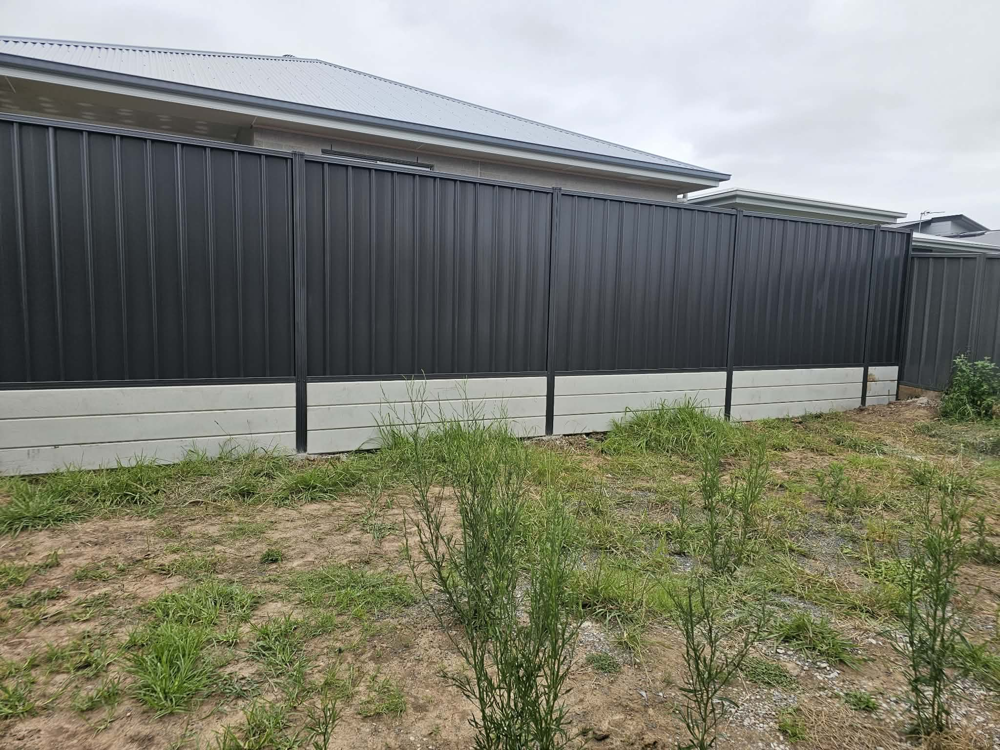
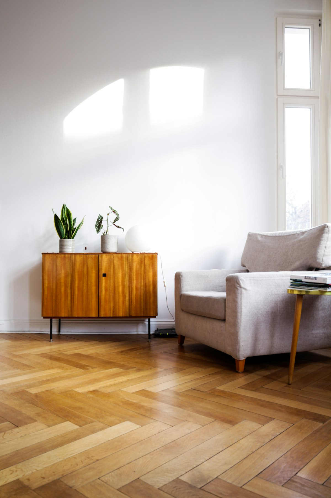
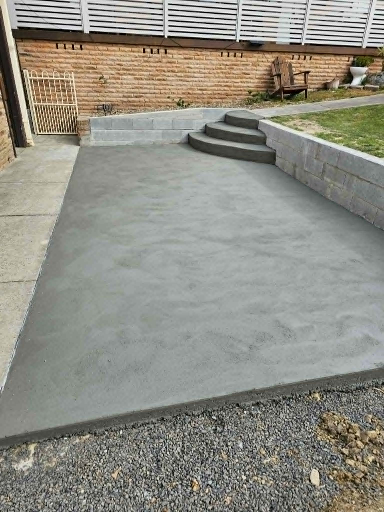
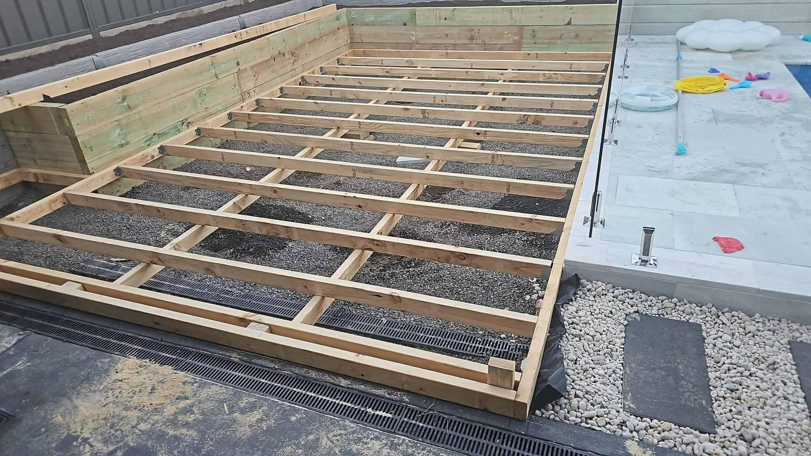
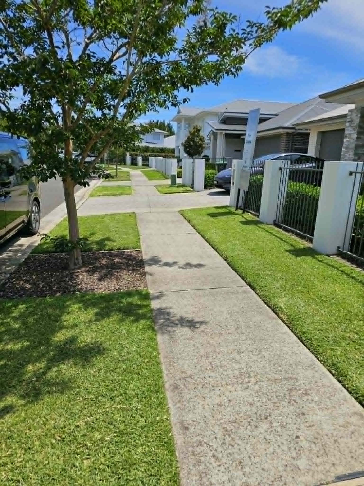
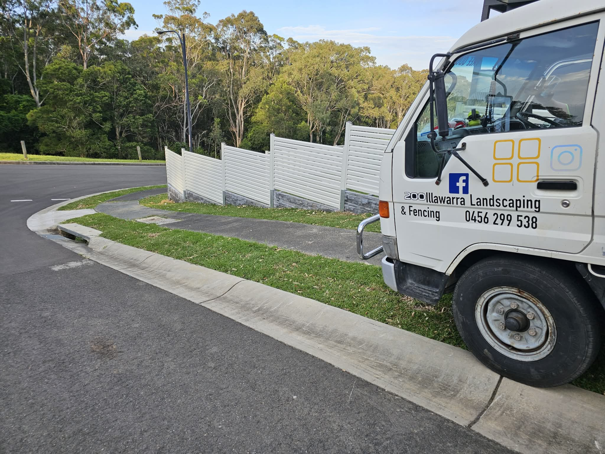
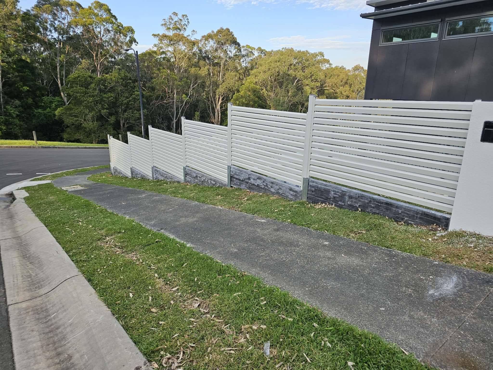
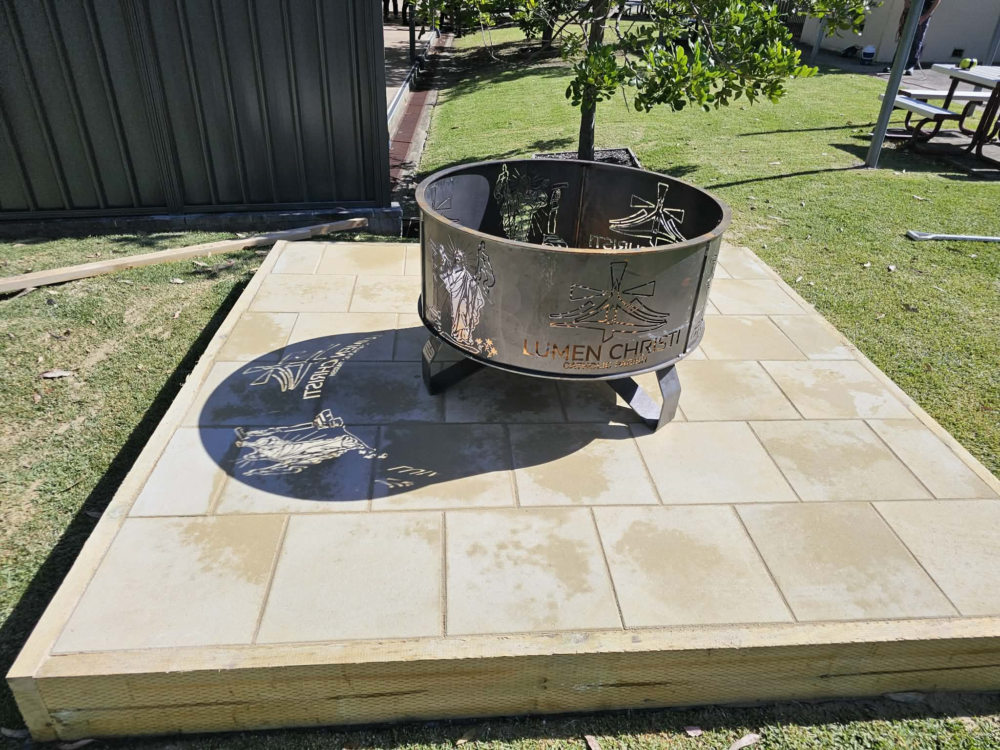

Illawarra Fencing & Landscaping Blog
Professional guides written for homeowners and property managers across Wollongong, Shellharbour, Kiama and surrounds — built for real local conditions.

Colorbond Fencing in the Illawarra: The Complete Homeowner Guide
Everything Illawarra homeowners need to know about Colorbond steel fencing — privacy, coastal durability, colours and installation.
Read article →
Timber vs Colorbond Fencing in Wollongong: Which Should You Choose?
A practical comparison of timber paling and Colorbond fencing for Wollongong blocks, weather and lifestyle.
Read article →
Pool Fencing in NSW: What Illawarra Homeowners Must Know
Safety, barrier design and upgrade tips for pool fencing across Shellharbour, Wollongong and Kiama.
Read article →
Retaining Walls for Sloping Illawarra Blocks
How professional retaining walls create usable space and protect homes on escarpment and coastal slopes.
Read article →
Best Fence Types for Coastal Homes in Kiama & Shellharbour
Salt air, wind and UV change what fencing lasts near the ocean. Here’s what works on the Illawarra coast.
Read article →
Aluminium Slat Fencing for Modern Illawarra Homes
Why horizontal and vertical slat screens are popular in new estates from Dapto to Albion Park.
Read article →
Chainwire Fencing for Commercial & School Sites
Security mesh fencing for industrial, education and sports facilities across the Illawarra.
Read article →
Decking Ideas for Outdoor Living in Wollongong
Design tips for timber and composite decks that connect indoor rooms to Illawarra gardens and views.
Read article →
Turf Installation Tips for Illawarra Lawns
How to prepare soil, choose turf types and establish a healthy lawn after fencing or renovation works.
Read article →
Native Garden Design for Illawarra Properties
Drought-wise natives, screening plants and biodiversity-friendly layouts for local climate conditions.
Read article →
Fence Height, Privacy & Neighbours: Practical Guidance
How to plan boundary height and style for privacy while keeping neighbour relationships constructive.
Read article →
Front Fence Ideas That Boost Street Appeal
Front fencing styles that improve first impressions for Illawarra homes without blocking the street entirely.
Read article →
Concrete Sleeper Retaining Walls Explained
Why concrete sleepers are a favourite for modern Illawarra retaining — strength, finish and longevity.
Read article →
Driveway Gate Automation for Home Security
Swing vs sliding gates, motors, remotes and safety features for Illawarra driveways.
Read article →
Landscaping After a New Fence: Make the Most of Your Boundary
Smart garden upgrades that follow fence installation so your yard looks finished, not bare.
Read article →
Fencing for New Estates in Dapto & Horsley
What new-build owners in western Illawarra estates should plan for side, rear and front fencing.
Read article →
Fencing & Outdoor Upgrades in Thirroul and Bulli
Local considerations for northern Illawarra homes: wind, character streetscapes and outdoor living.
Read article →
How to Prepare Your Property for Fence Installation
A checklist so install day runs smoothly — access, services, pets, neighbours and clearing.
Read article →
Biophilic Backyard Design in Wollongong
How nature-connected outdoor design reduces stress and lifts daily enjoyment at home.
Read article →
Erosion Control for Coastal Illawarra Properties
Practical strategies using retaining, drainage and planting to protect sloping coastal blocks.
Read article →
Commercial Fencing Solutions Around Port Kembla
Perimeter security, compound fencing and access control for industrial and commercial sites.
Read article →
Building Outdoor Entertaining Areas That Work Year-Round
Decks, paving, screens and planting ideas for Illawarra weather and lifestyle.
Read article →
Choosing Fence Colours That Suit Your Home
How to select Colorbond and powdercoat colours that complement roof, brick and landscape.
Read article →
Seasonal Garden Maintenance for Illawarra Yards
A simple seasonal checklist for lawns, beds, hedges and outdoor timber in our local climate.
Read article →
Why Hiring a Local Illawarra Fencing & Landscaping Team Matters
Local knowledge of soil, council patterns, weather and suppliers makes projects smoother and longer lasting.
Read article →